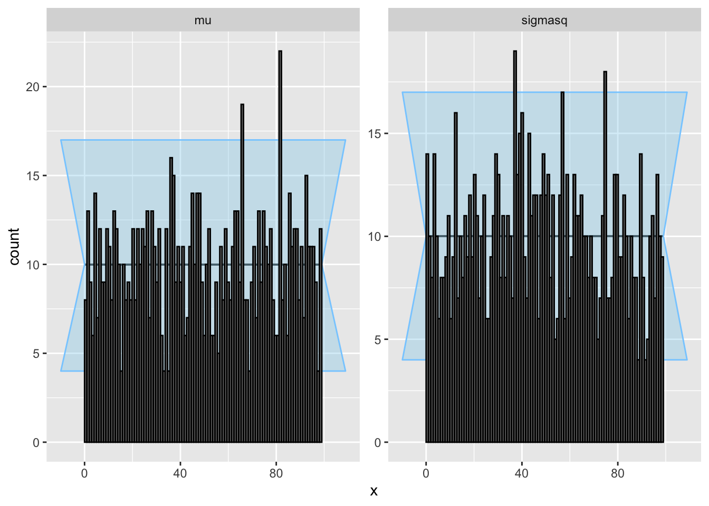
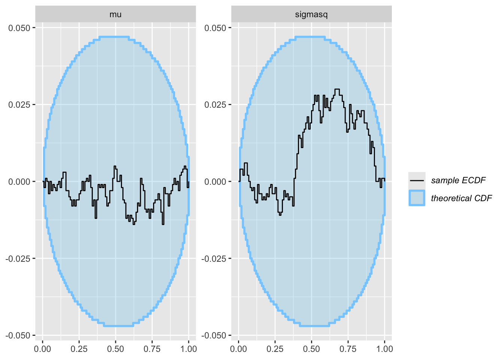
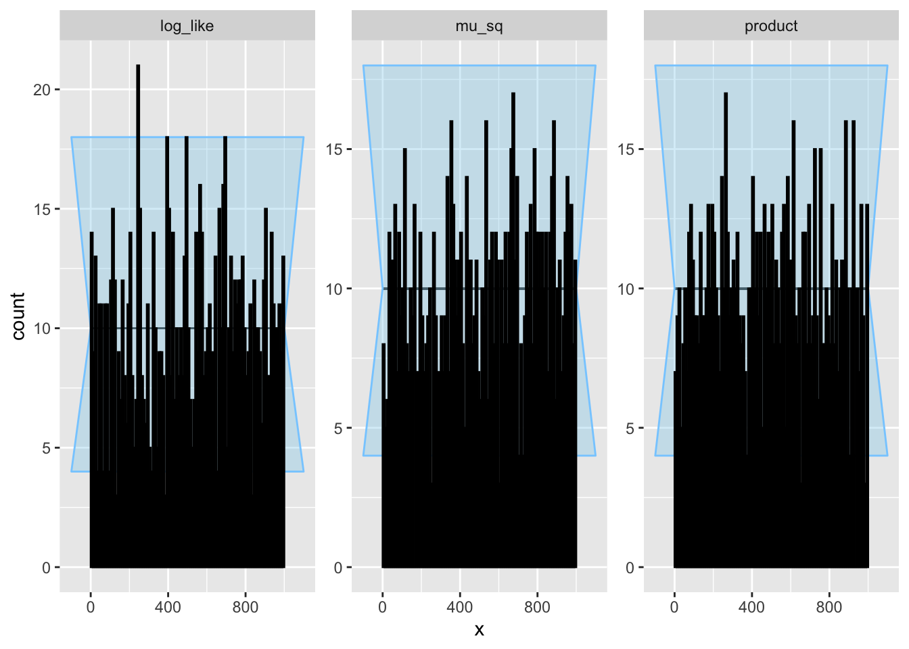
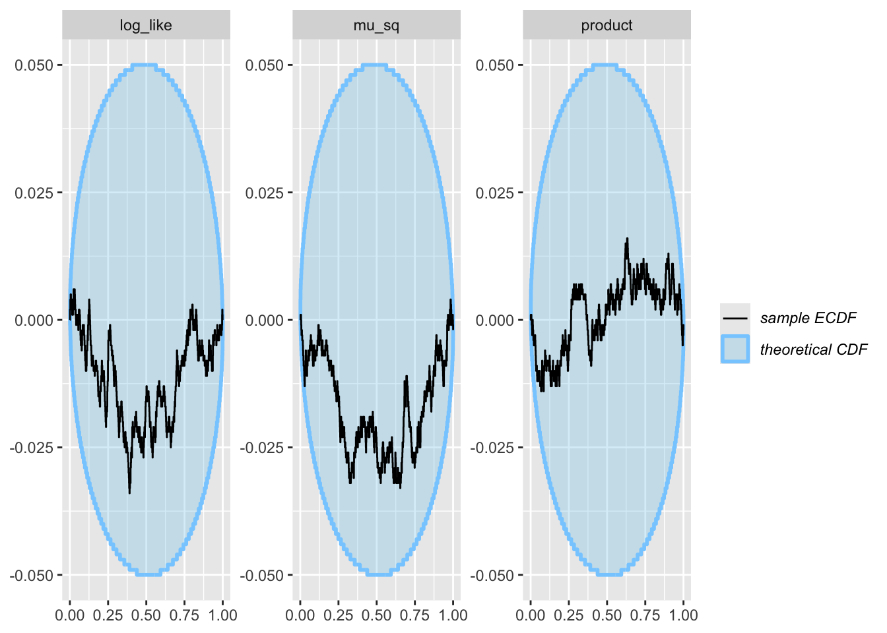

source("R/sbc.R")test_SBC
Testing SBC
On the iid normal example
Load our package:
Taken directly from tutotial_bayes_gibbs_sbc:
prior_sampler <- function(prior_hyper_params){
a0 <- prior_hyper_params[1]
b0 <- prior_hyper_params[2]
mu0 <- prior_hyper_params[3]
v20 <- prior_hyper_params[4]
# simulate mu ~ N(mu0, v20)
mu <- rnorm(1, mu0, sqrt(v20))
# independently simulate sigma2 ~ IG(a0, b0)
sigma2 <- 1 / rgamma(1, a0, rate = b0)
return(c(mu = mu, sigmasq = sigma2))
}
likelihood_sampler <- function(n, theta){
mu <- theta[1]
sigma2 <- theta[2]
y <- rnorm(n, mu, sqrt(sigma2))
return(y)
}And the posterior sampler:
posterior_sampler <- function(ndraws,
y,
prior_hyper_params,
init = c(mean(y), var(y))){
n <- length(y)
sum.y <- sum(y)
a0 <- prior_hyper_params[1]
b0 <- prior_hyper_params[2]
mu0 <- prior_hyper_params[3]
v20 <- prior_hyper_params[4]
# preallocate storage
THETA <- matrix(0, nrow = ndraws, ncol = length(init))
# initialize
theta <- init
for(s in 1:ndraws){
# draw mean given variance and data
v2n = 1 / (1/v20 + n/theta[2])
mun = v2n * (mu0/v20 + sum.y/theta[2])
theta[1] <- rnorm(1, mun, sqrt(v2n))
# draw variance given mean and data
an = a0 + n/2
bn = b0 + sum((y - theta[1])^2) / 2
theta[2] <- 1 / rgamma(1, shape = an, rate = bn)
# store the latest draw in the sth row of the THETA matrix
THETA[s, ] <- theta
}
return(THETA)
}Set hyperparameters:
prior_hyper_params <- c(a0 = 1, b0 = 1, mu0 = 0, v20 = 1)Run it:
res <- run_sbc(
prior_sampler = prior_sampler,
likelihood_sampler = likelihood_sampler,
posterior_sampler = posterior_sampler,
n_sims = 1000, # small for testing
n_obs = 50,
n_draws = 1000, # small for testing
prior_hyper_params = prior_hyper_params,
parallelize = FALSE
) - 1 (0%) fits had maximum Rhat > 1.01. Maximum Rhat was 1.014. Not all diagnostics are OK.
You can learn more by inspecting $default_diagnostics, $backend_diagnostics
and/or investigating $outputs/$messages/$warnings for detailed output from the backend.SBC::plot_rank_hist(res$sbc_result)
SBC::plot_ecdf_diff(res$sbc_result)
Ok great! Time to see if we can now use our package to run some test functions on it.
source("R/testfunctions.R")We need to define our test functions in a specific way. Like this:
test_fns <- make_test_functions(
mu_sq = function(theta, y) theta["mu"]^2,
product = function(theta, y) theta["mu"] * theta["sigmasq"],
log_like = function(theta, y) sum(dnorm(y,
mean = theta["mu"],
sd = sqrt(theta["sigmasq"]),
log = TRUE))
)Recompute ranks using our new function:
ranks_test <- recompute_ranks(res, test_fns)We use the .ranks_to_sbc_results function as an intermediary: it formats our recomputed ranks ranks_test object into the shape expected by the SBC plot functions.
ranks_res <- .ranks_to_sbc_results(ranks_test)Then we can call the SBC plot functions on the appropriately formatted ranks_res object:
SBC::plot_rank_hist(ranks_res)
SBC::plot_ecdf_diff(ranks_res)
User workflow
In conclusion, the user workflow is as follows:
- You fit the model ONCE.
result <- run_SBC(…)
- Plot baseline parameters - use SBC directly from the package.
SBC::plot_rank_hist(result\(sbc_result) SBC::plot_ecdf(result\)sbc_result) SBC::plot_ecdf_diff(result$sbc_result)
- Define test functions
test_fns <- make_test_functions(…)
- Recompute ranks, change into appropriate format, and plot
ranked <- recompute_ranks(result, test_fns)
ranked_res <- .ranks_to_sbc_results(ranks_test)
SBC::plot_rank_hist(ranked_res) SBC other plots, etc.